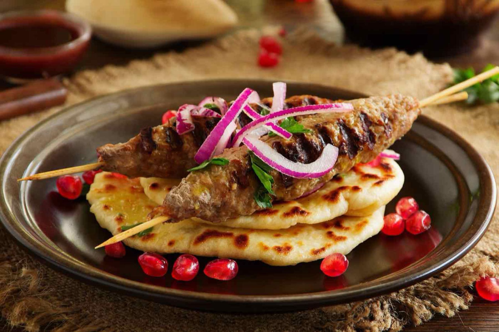
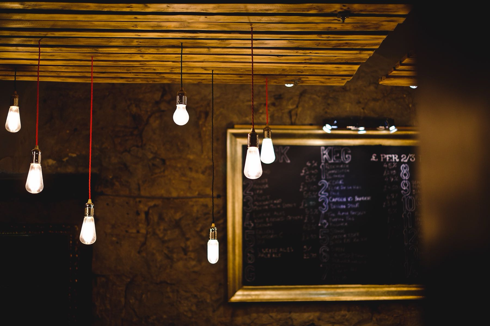
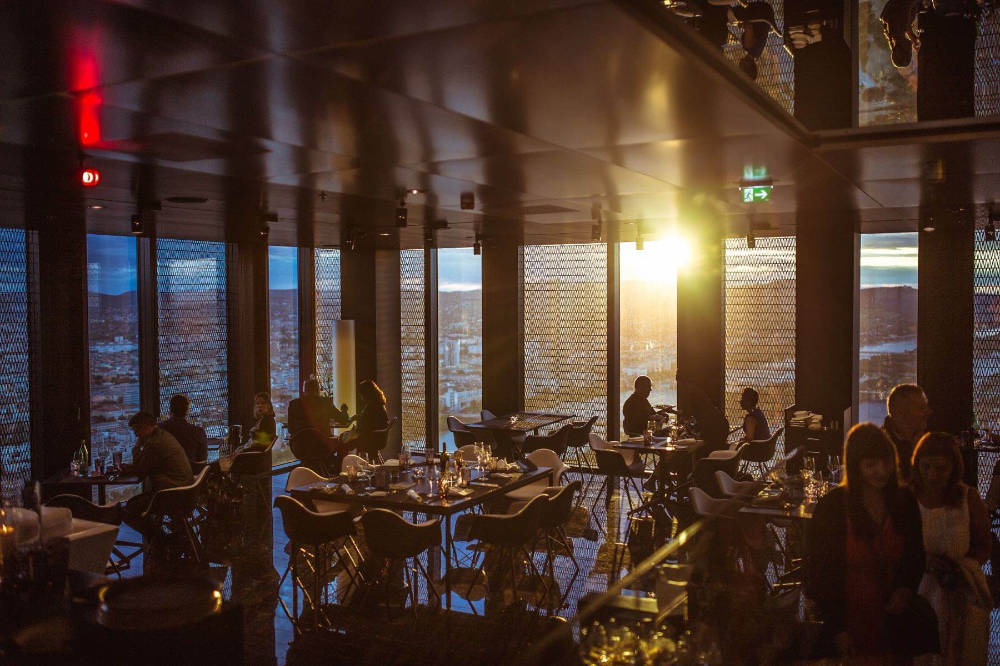

Ateş yanar, köz kızarır, kebap sabırla pişer. Pide fırından çıktığı an masanızdadır.

Salon
Ailecek, arkadaşlarla ya da tek başına; sıcak bir masa.


Acıktınız mı?
İletişim
Paket sipariş, rezervasyon ya da kalabalık masalar için yazın veya arayın.
Telefon0543 262 64 30
WhatsAppMesaj gönderin
Adres
Adresiniz buraya eklenecek · haritada ara
Saatler
Çalışma saatleriniz buraya eklenecek